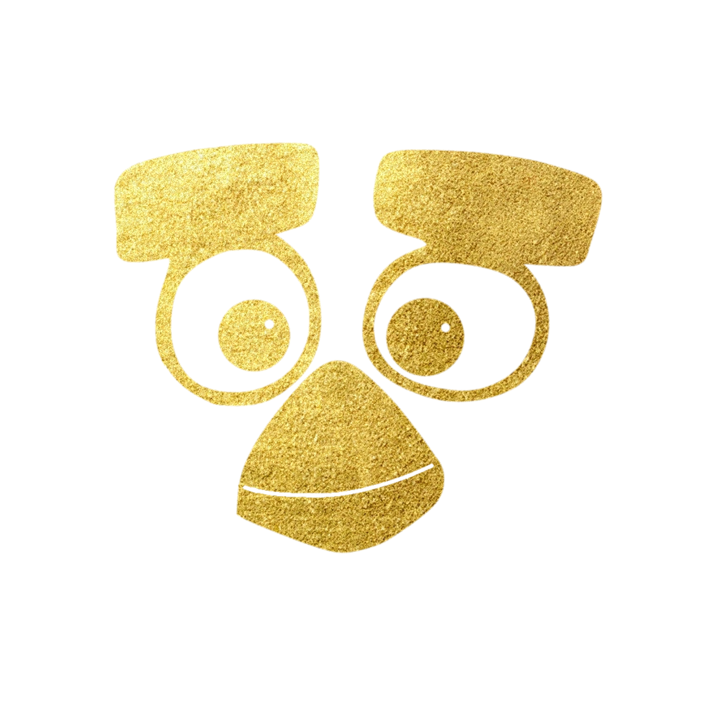

2026.09 — 至今
新媒体运营
广州市玛雅文化传播有限公司独立完成无忧行小红书和 APP 的文案编写、图片制作，结合设计软件与 Codex AI 辅助创作，并参与舆情监控。

你好，我是 IenjoyMatch。
用观察与创作，记录生活中的每一种可能。
我是 IenjoyMatch，网络与新媒体专业学生。关注城市文化、影像和新媒体内容，喜欢从日常中寻找选题，把想法变成有温度、有表达的作品。
网络与新媒体
2023 — 2027
视觉设计与影像剪辑
剪映、AIGC 工具内容创作与制作
观察与记录
内容与数据策划与运营
在真实项目里学习，从每一次实践中积累经验。
独立完成无忧行小红书和 APP 的文案编写、图片制作，结合设计软件与 Codex AI 辅助创作，并参与舆情监控。
聚焦广州城市纪实与本地文化，独立完成选题、拍摄、排版、发布及用户维护；结合平台数据持续优化内容。
围绕广州地铁 11 号线开通，完成选题策划、采访提纲和拍摄脚本，参与镜头拍摄与后期制作。
协助校新闻社拍摄新年场景，参与图片后期修图及视觉设计，制作适合公众号风格的素材。